AMBE 101 :: Lecture 01 :: HISTORY OF MICROBIOLOGY: SPONTANEOUS GENERATION THEORY

Microbiology often has been defined as the study of organisms and agents too small to be seen clearly by the unaided eye—that is, the study of microorganisms. Because objects less than about one millimeter in diameter cannot be seen clearly and must be examined with a microscope, microbiology is concerned primarily with organisms and agents this small and smaller.
Microbial World
Microorganisms are everywhere. Almost every natural surface is colonized by microbes (including our skin). Some microorganisms can live quite happily in boiling hot springs, whereas others form complex microbial communities in frozen sea ice.
Most microorganisms are harmless to humans. You swallow millions of microbes every day with no ill effects. In fact, we are dependent on microbes to help us digest our food and to protect our bodies from pathogens. Microbes also keep the biosphere running by carrying out essential functions such as decomposition of dead animals and plants.
Microbes are the dominant form of life on planet Earth. More than half the biomass on Earth consists of microorganisms, whereas animals constitute only 15% of the mass of living organisms on Earth.
This Microbiology course deals with
- How and where they live
- Their structure
- How they derive food and energy
- Functions of soil micro flora
- Role in nutrient transformation
- Relation with plant
- Importance in Industries
The microorganisms can be divided into two distinct groups based on the nucleus structure:
Prokaryotes – The organism lacking true nucleus (membrane enclosed chromosome and nucleolus) and other organelles like mitochondria, golgi body, entoplasmic reticulum etc. are referred as Prokaryotes. (Ex : Bacteria, archaea)
Eukaryotes - The organism possessing membrane enclosed nucleus and other cell organelles are referred as Eukaryotes (Ex : algae, fungi, protozoa)
The microorganisms were divided into 6 distinct groups based on the phylogenic, morphological and physiological characters.
The major groups of microorganisms are
- Bacteria are phylogenetically related group of unicellular prokaryotic organisms distinct from archeae
- Archaea is phylogenetically related group of prokaryotes which are primitive and distinct from bacteria
- Fungi are group of eukaryotic organisms lacking chlorophyll. They range in size and shape from single celled yeast to multicellular mushrooms.
- Algae refer the group of eukaryotic organisms with chlorophyll. They range in size and shape from single celled algae (Ex: Chlorella) to complex cellular structured plant like algae (Ex. Kelp)
- Protozoa are group of eukaryotic organisms lack of cell wall. The morphology, nutrition and physiology is different from other groups
- Viruses are group of non-cellular organisms, parasite or pathogen to plant, animals and other microorganisms. They are too small and cab be visualized only under electron microscopes
History of Microbiology in brief
Obviously human have had to deal with microbes even before the recorded history. The first record of human using comes from ancient tablets from mid east.
Babylonians were using yeast to make beer over 8000 years ago and acetic acid bacteria to make vinegar over 6000 years ago.
About 5000 years ago, Persia (Now Iran) region recorded the wine making.
The Romans had God for that were specific for microorganisms. The roman God of mold and mildew was “Robigus” and “Robigo” which means crop rust. (Rust is one of the plant disease caused by fungus). God Robigus was very much feared because of crop lost.
About 2000 years ago, Romans proposed that diseases were caused by tiny animals. But, fundamentalist religions had a strong hold over the progress.
The real microbiology history starts from 1600s, when people began to make crude lenses and microscopes.
HIGHLIGHTS IN THE HISTORY OF MICROBIOLOGY
Effects of Disease on Civilization
- Infectious diseases have played major roles in shaping human history
- Bubonic Plague epidemic of mid 1300's, the "Great Plague", reduced population of western Europe by 25%. Plague bacterium was carried by fleas, spread from China via trade routes and poor hygiene. As fleas became established in rat populations in Western Europe, disease became major crisis.
- Smallpox and other infectious diseases introduced by European explorers to the Americas in 1500's were responsible for decimating Native American populations. Example: In the century after Hernan Cortez's arrival in Mexico, the Aztec population declined from about 20 million to about 1.6 million, mainly because of disease.
- Infectious diseases have killed more soldiers than battles in all wars up to WW II. Example: in U. S. Civil war, 93,000 Union soldiers died in direct combat; 210,000 died as a result of infections.
- Until late 1800's, no one had proved that infectious diseases were caused by specific microbes, so the possibility of prevention or treatment had no sound empirical base.
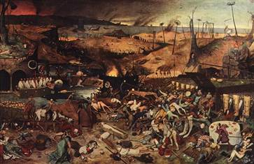
Brueghel: The Triumph of Death (1560)
Discovery of Microbes
- To see microbes, you need a microscope. The first microscope was invented by Antony van Leeuwenhoek (1632-1723), a Dutch businessman.
- Leeuwenhoek took up lens grinding to make magnifiying glasses so he could examine fine weave of fabrics. In testing his lenses, he discovered many small creatures he called "animalcules" in samples such as pond water. His best lenses could magnify 300-500X.
- Leeuwenhoek microscopes were crude, relied on a single lens held in a metal plate.
- Leeuwenhoek described many previously unseen life forms, including different forms of bacteria, mold spores, etc. Leeuwenhoek reported discoveries to Royal Society from 1670's on, firmly established existence of microbes. Nevertheless, the significance of this discovery was not apparent for almost 200 years.
Antony van Leeuwenhoek.
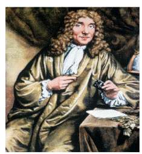
Origin of Life Controversy
- Where did microbes come from? Many believed they arose from simple materials by process of spontaneous generation. This notion had been posited by Aristotle (382-322 B.C.) and other Greek philosophers to explain decay and appearance of animals such as flies and frogs, and was widely held as common sense even in 1700's and 1800's.
- Francisco Redi (1626-1697) demonstrated that flies did not arise spontaneously from rotting meat by simple experiment. If jar of meat was covered by fine muslin, maggots did not arise. However, the simpler life forms discovered by Leeuwenhoek lacked visible complexity, and most people still believed these could arise spontaneously.
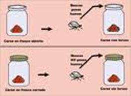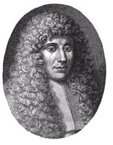
- John Needham (1731-1781), a Scottish clergyman and naturalist, showed that mirobes grew in soups exposed to air. Claimed existence of a "life force" present in inorganic matter that could cause spontaneous generation. One of his more convincing demonstrations was to boil some soup (briefly), pour into clean flasks 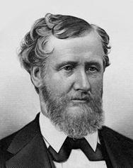with cork lids, and show that microbes would soon arise.
- Lazzaro Spallanzani (1729-1799) claimed Needham's organisms came from heat-resistant microbes. If flasks were boiled long enough (1-2 h), nothing grew. But Needham countered that prolonged heating destroyed the "life force".
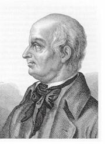
- Louis Pasteur (1822-1895) was passionate believer that life only originated from previous life, developed several experiments that finally deflated claims for spontaneous generation. Pasteur filtered air through cotton to trap airborne materials, then dissolved the cotton and examined the particulate matter under a microscope; many bacteria and spores of other life forms such as molds were present. Since most skeptics kept arguing that overheating killed the life force present in air, Pasteur developed and ingenious experiment using a swan neck flask that allowed fresh air to remain in contact with boiled materials. The long passageway prevented airborne microbes from reaching the nutrient liquid, without impeding access to air. One of Pasteur's flasks is still sterile after 100+ years of being exposed to the air (Pasteur Institute, Paris).
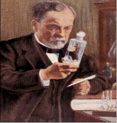
Louis Pasteur
Spontaneous Generation theory
From earliest times, people had believed in spontaneous generation—that living organisms could develop from nonliving matter. Even the great Aristotle (384–322 B.C.) thought some of the simpler invertebrates could arise by spontaneous generation. This view finally was challenged by the Italian physician Francesco Redi (1626–1697), who carried out a series of experiments on decaying meat and its ability to produce maggots spontaneously. Redi placed meat in three containers. One was uncovered, a second was covered with paper, and the third was covered with a fine gauze that would exclude flies. Flies laid their eggs on the uncovered meat and maggots developed. The other two pieces of meat did not produce maggots spontaneously. However, flies were attracted to the gauze-covered container and laid their eggs on the gauze; these eggs produced maggots. Thus the generation of maggots by decaying meat resulted from the presence of fly eggs, and meat did not spontaneously generate maggots as previously believed. Similar experiments by others helped discredit the theory for larger organisms.
Leeuwenhoek’s discovery of microorganisms renewed the controversy. Some proposed that microorganisms arose by spontaneous generation even though larger organisms did not. They pointed out that boiled extracts of hay or meat would give rise to microorganisms after sitting for a while. In 1748 the English priest John Needham (1713–1781) reported the results of his experiments on spontaneous generation. Needham boiled mutton broth and then tightly stoppered the flasks. Eventually many of the flasks became cloudy and contained microorganisms. He thought organic matter contained a vital force that could confer the properties of life on nonliving matter. A few years later the Italian priest and naturalist Lazzaro Spallanzani (1729–1799) improved on Needham’s experimental design by first sealing glass flasks that contained water and seeds. If the sealed flasks were placed in boiling water for 3/4 of an hour, no growth took place as long as the flasks remained sealed. He proposed that air carried germs to the culture medium, but also commented that the external air might be required for growth of animals already in the medium. The supporters of spontaneous generation maintained that heating the air in sealed flasks destroyed its ability to support life. Several investigators attempted to counter such arguments. Theodore Schwann (1810–1882) allowed air to enter a flask containing a sterile nutrient solution after the air had passed through a red-hot tube. The flask remained sterile. Subsequently Georg Friedrich Schroder and Theodor von Dusch allowed air to enter a flask of heat-sterilized medium after it had passed through sterile cotton wool. No growth occurred in the medium even though the air had not been heated. Despite these experiments the French naturalist Felix Pouchet claimed in 1859 to have carried out experiments conclusively proving that microbial growth could occur without air contamination.
This claim provoked Louis Pasteur (1822–1895) to settle the matter once and for all. Pasteur first filtered air through cotton and found that objects resembling plant spores had been trapped. If a piece of the cotton was placed in sterile medium after air had been filtered through it, microbial growth appeared. Next he placed nutrient solutions in flasks, heated their necks in a flame, and drew them out into a variety of curves, while keeping the ends of the necks open to the atmosphere .Pasteur then boiled the solutions for a few minutes and allowed them to cool. No growth took place even though the contents of the flasks were exposed to the air. Pasteur pointed out that no growth occurred because dust and germs had been trapped on the walls of the curved necks. If the necks were broken, growth commenced immediately. Pasteur had not only resolved the controversy by 1861 but also had shown how to keep solutions sterile. The English physicist John Tyndall (1820–1893) dealt a final blow to spontaneous generation in 1877 by demonstrating that dust did indeed carry germs and that if dust was absent, broth remained sterile even if directly exposed to air. During the course of his studies, Tyndall provided evidence for the existence of exceptionally heat-resistant forms of bacteria. Working independently, the German botanist Ferdinand Cohn (1828–1898) discovered the existence of heat-resistant bacterial endospores
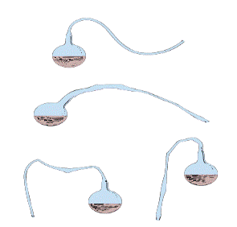The Spontaneous Generation Experiment. Pasteur’s swan neck flasks used in his experiments on the spontaneous generation of microorganisms.
2. Disprove of Spontaneous Generation theory
At that time, the age old idea of “Spontaneous Generation theory” was the dominant one. The idea that organism originate directly from non-living matter. (Life from non-living) also called as abiogenesis (a – not; bio – life; genesis – origin).
Ex : Maggots were developed spontaneously via recombination of matters in rotting materials. (ex meat)
The microbiology starts when the disprove of SG theory.
Louis Pasteur (1822 – 1895) and disproval of Spontaneous generation theory
He performed “gooseneck experiment”. The nutrient of flask was heated and the untreated – unfiltered air could pass in or out, but the germs settled in the gooseneck and no microbes were observed in the nutrient solution.
His concept of Germs theory of disease (means germs are responsible for the disease not the inert mater) ends the SG theory.
Contributions of Louis Pasteur (1822 – 1895)
- Disproved the SG theory
- Discovered that fermenting fruit to alcohol by microbes – From now the Fermentation started
- Sorted different microbes giving different taste of wine.
- He selected a particular strain (Yeast) for high quality wine.
- He developed a method to remove the undesired microbes from juice without affecting its quality. Heating the juice at 62.8°C for half-an hour did the job. This technique is called as Pasteurization, which is commonly used in the field of milk industry.
- He discovered that parasites (protozoa) causing pebrine disease of silk worm. He suggested that disease free caterpillars can eliminate the disease.
- He isolated the anthrax causing bacilli from the bloods of cattle, sheep and human being.
- He also demonstrated the virulence (ability of microbe to cause disease) of bacteria
- He developed vaccine (a killed or attenuated microbe to induce the immunity) against rabbis from the brains and spinal cord of rabbit
John Tyndall (1820 -1893)
- Proved that dust carries the germs and if no dust in the air, the sterile broth remained free of microbial growth for indefinite period.
- He also developed a sterilization method “Tyndallization”, referred as intermittent or fractional sterilization. The subsequent cooling and heating by steam for 3 days will remove the germs and their spores.
Martinus Willium Beijerinck (1851 – 1931)
- Developed the enrichment technique to isolate various group of bacteria.
- Isolated sulphur reducing bacteria and sulphur oxidizing bacteria from soil
- Isolated free-living nitrogen fixing bacterium, Azotobacter from soil,
- Root nodulating bacterium, Rhizobium, Lactobacillus, green algae were identified by him
- He confirmed the Tobacco mosaic virus causes disease and it incorporated in the host plant to reproduce.
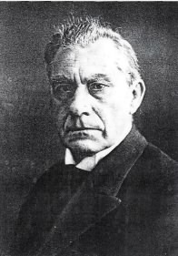
Sergei Winogradsky (1856 – 1953)
The following are the contributions of Winogradsky to soil microbiology.
- Microorganisms involved in N cycle, C cycle, S cycle
- Nitrification process in soil
- Autotrophic nutrition of bacteria
- Chemolithotrophic nutrition of soil bacteria
- Discovered anaerobic nitrogen fixing bacterium Clostridium pasteurianum
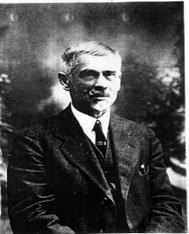
Walther Hesse & Fannie E. Hesse (1883)
They used agar instead of gelatin for preparation of media. Agar goes to solution at 100°C and solidifies at 45°C. Till now this was not replaced by any other substance.
Joseph Lister (1878)
Developed Pure culture technique. Pure culture referred as the growth of mass of cells of same species in a vessel. He developed the pure cultures of bacteria using serial dilution technique.
He also discovered that carbolic acid to disinfect the surgical equipments and dressings leads the reduction of post-operational deaths/infections.
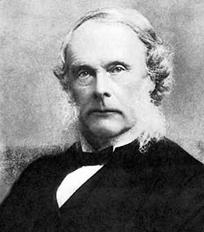
Alexander Fleming (1928) identified Penicillium notatum inhibiting Staphylococcus aureus and identified the antibiotic Penicillin
- 1929-Discovered antibiotic penicillin –important milestone in medical microbiology
- Found that natural substances having antimicrobial activity- Saliva,Nasal mucous
- Worked on Staphylococcus aureus,-inhibition of growth-due to Penicillin
- Florey &Chain-isolated Penicillin in pure culture.
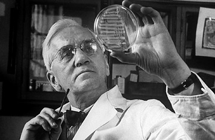
Selman A Waksman, 1945 identified Streptomycin antibiotic from soil bacterium. He also coined the term antibiotics (referring a chemical substance of microbial origin which is in small quantity exert antimicrobial activity.
- 1927- Wrote the book on Principles of soil Microbiology
- In 1939 Waksman and his colleagues undertook a systematic effort to identify soil organisms producing soluble substances that might be useful in the control of infectious diseases, what are now known as antibiotics
- Within a decade ten antibiotics were isolated and characterized,
- three of them with important clinical applications
- actinomycin in 1940, streptomycin in 1944, and neomycin in 1949.
- Eighteen antibiotics were discovered under his general direction.
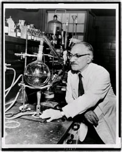
| Download this lecture as PDF here |